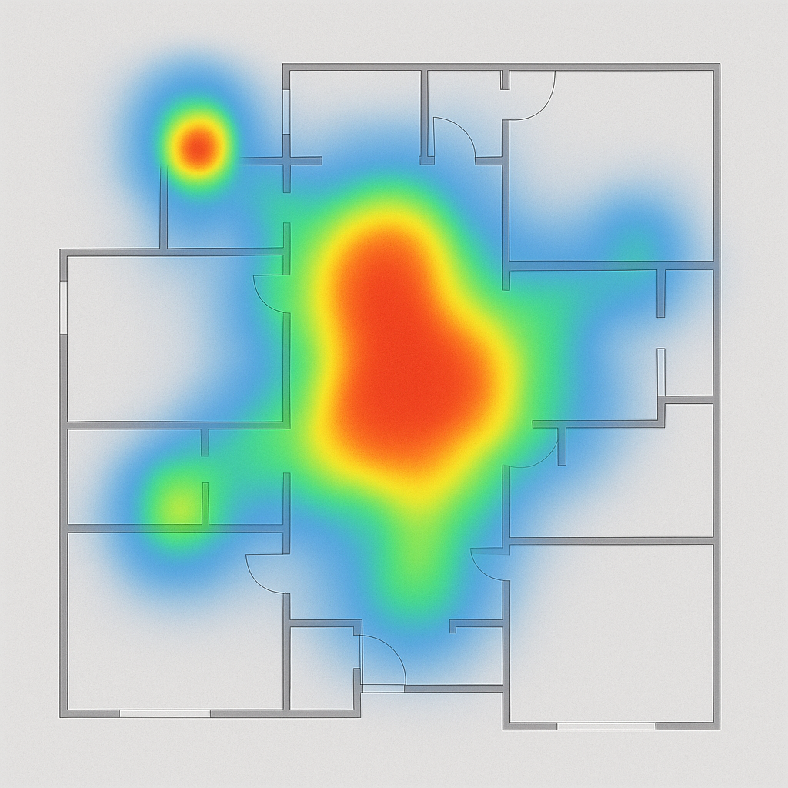

Problem
Amidst the COVID-19 pandemic, the challenge was to create a virtual showroom for a core B2B product to secure client leads. The primary goal was 'generating leads by ensuring users complete the virtual tour,' but we faced technical limitations with 3D assets and the difficulty of conveying a complex product structure in a mobile-first environment.
Pain Point
Post-launch, GA4 analysis revealed a critical issue: an 80% bounce rate and a dismal 'virtual showroom completion rate,' our key performance indicator (KPI). This not only meant failing to secure leads but also risking a negative brand experience and threatening the entire project's ROI. A data-driven diagnosis to find the root cause of the low completion rate was imperative.
Action
Led a structured, hypothesis-driven project to improve the showroom completion rate, focusing on 'Usability,' 'User Experience (UX),' and 'Content'.
-
Hypothesis 1 (Usability): 'It's difficult to use.'
→ Implementation of an interactive tutorial based on competitor UX benchmarking to reduce the initial learning curve. -
Hypothesis 2 (User Experience): 'The experience is poor.'
→ Pinpointed drop-off points using GA4, then visualized clickstream data as a heatmap using Python (Matplotlib, Seaborn). Identified a key bottleneck preventing completion: high-resource 3D assets in low-traffic areas slowing load times. Collaboration with engineers to optimize these assets using the LOD (Level of Detail) technique. -
Hypothesis 3 (Content): 'It's hard to find desired
information.'
→ Redesigning the Information Architecture (IA) to a card-style format, arranging custom information based on user interests and actual exploration flows.

Figure 01: Heatmap of raw clickstream data identifying the UX bottleneck
Result
- Achieved a 25% increase in the core showroom completion rate.
- 15 percentage point (p.p.) reduction in core bounce rate through comprehensive improvements.
- 20% improvement in average page load speed via 3D asset optimization.
- Direct contribution to securing B2B client leads by boosting user retention and completion.
Tech Stack
- Google Analytics (GA4): Defining and tracking KPIs, including user funnels and showroom completion rate; extracting raw data for analysis
- Python (Matplotlib, Seaborn): Leading data analysis; processing and visualizing raw clickstream data to identify problems and provide evidence for technical improvements
- Information Architecture: Leading the redesign of the content structure to improve user engagement and journey completion
Live Project: HERE